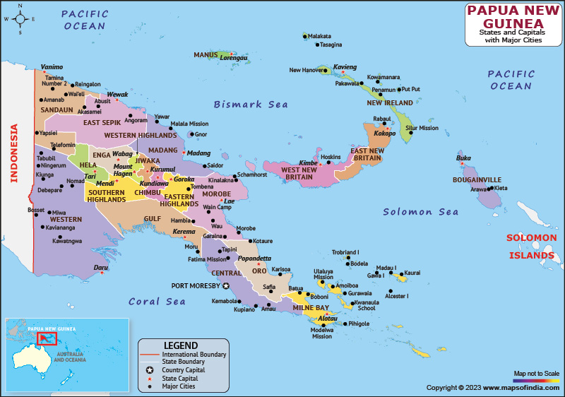

Vision
Health, wellbeing and the ability to participate in community life is enjoyed by all.
Mission
Ensure people in Papua New Guinea have access to prosthetic, orthotic and mobility device services, enabling equal participation in their family, the community they live in and improve their quality of life.
Goal
Ensure people of Papua New Guinea have access to people-centered,
high quality, affordable and accessible mobility device services,
irrespective of the health service delivery levels they have access to,
where they live, or their personal, social or economic circumstances.
Background
Established in 1967, the National Orthotics and Prosthetics Service (NOPS) is the primary prosthetics,
orthotics and mobility device provider in Papua New Guinea. NOPS operates under the Health Facilities
Standards Branch (HFSB) of the National Department of Health (NDOH) and respective Provincial Health
Authorities to provide prosthetic, orthotic, wheelchair, walking aid and self-care assistive technology (AT)
services (hereafter referred to as NOPS assistive technology services) to people throughout Papua New
Guinea.
>
There are seven NOPS facilities throughout Papua New Guinea.
- National Capital District,
- East New Britain Province,
- East Sepik Province,
- Milne Bay Province, Morobe
- Province, Simbu Province
- Western Highlands Province.
Two church-based organisations.
- West Sepik Province-Aitape
- Eastern Highlands -Kassam
Province.